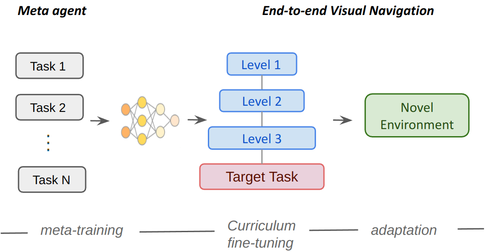
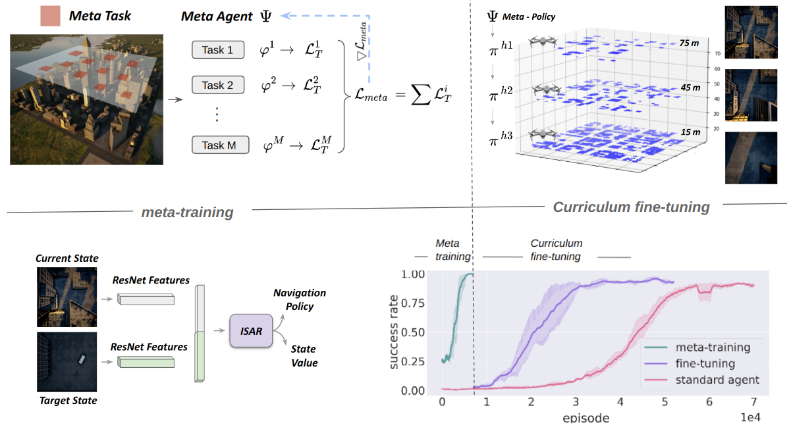
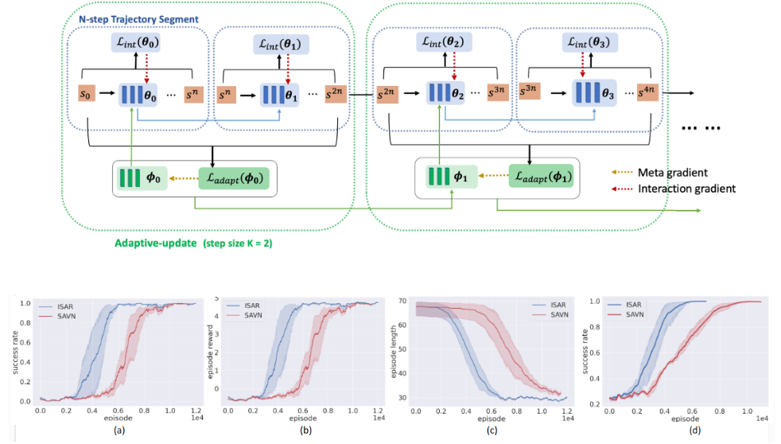

Two-stage learning framework: The navigation task consists of two phases: meta-training and curriculum fine-tuning. Meta-training allows the agent to learn a master navigation policy. The hierarchical-structured curriculum adapts the meta-policy to the target task. This meta-policy can further be transferred to novel environments.

For meta-training, we set the agent’s altitude at 300 meters and randomly select meta-tasks within this level.
In the curriculum fine-tuning phase, we initialize the agent with the meta-policy and conduct training at the altitude of 75 meters, then we lower the drone to 45 meters and finally to 15 meters.
We use ResNet18 to extract the features of current state and target state The combined feature is then fed into the policy network to generate the navigation policy and value.
The total number of episodes required for convergence of metatraining and curriculum fine-tuning is approximately 35K, whereas the standard agent require at least 60K episodes on average to achieve the same performance.

The illustration of the ISAR framework with adaptive-update step size = 2. During exploration, we learn two types of losses: the interaction loss to update the interaction policy, and the adaptive loss based on trajectory segment with length N to update the adaptation policy. The results show that our ISAR algorithm demonstrates a significant improvement in convergence speed compared to SAVN (traditional MRL).